At the game's camera
The game's fixed camera: 50° down, 42° field of view, about 15 m from a middle-row seat. These loops keep the phone's own pixel size (a 1080-pixel-tall screen), so the two students are as small as they are in the game. Whisperer in blue on the left, listener in yellow on the right.
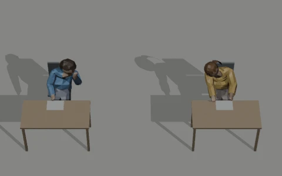
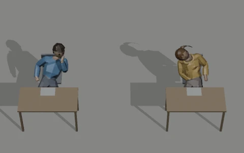
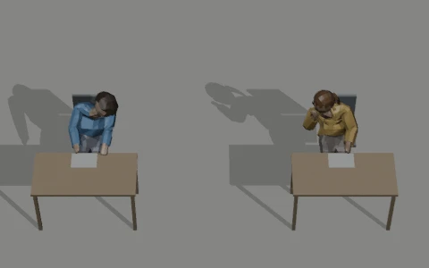
Both directions, enlarged
The same framing at twice the resolution, to see what is happening. Each clip comes in a left and a right version: the right one is the left one mirrored, so a pair works whichever side the neighbour sits on.
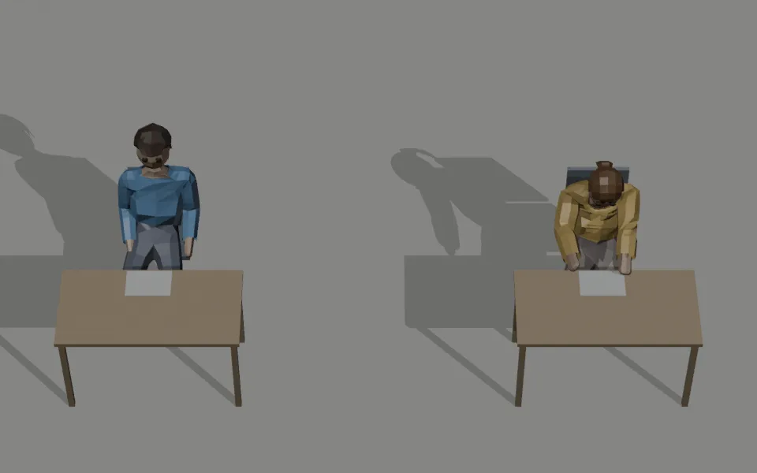
Three-quarter view
From the front corner of the room, closer, to judge the motion itself: the hand, the head, the desk and the chair.
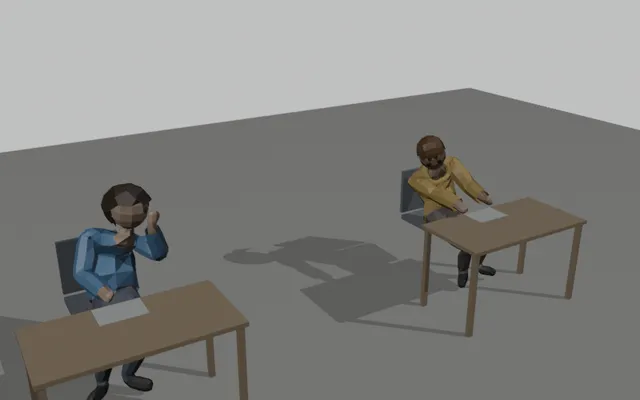
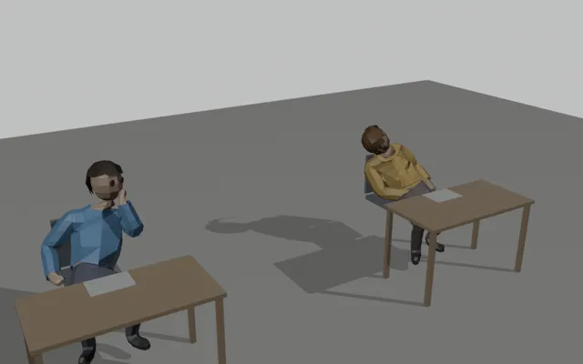
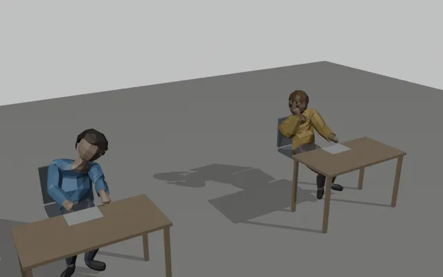
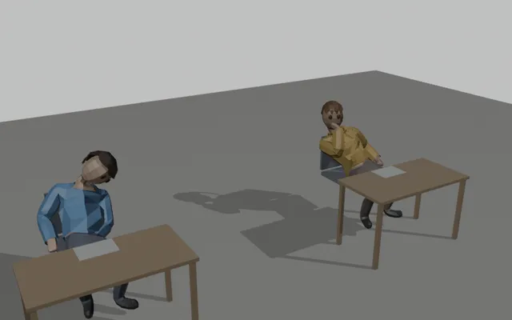
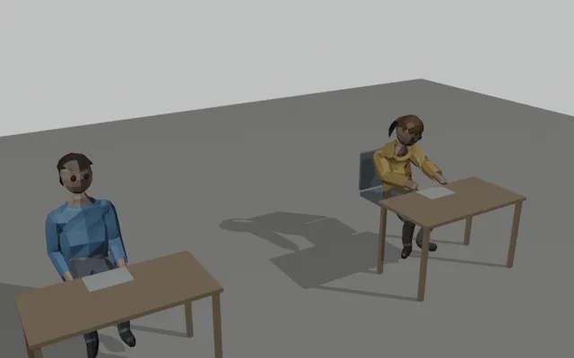
One frame each
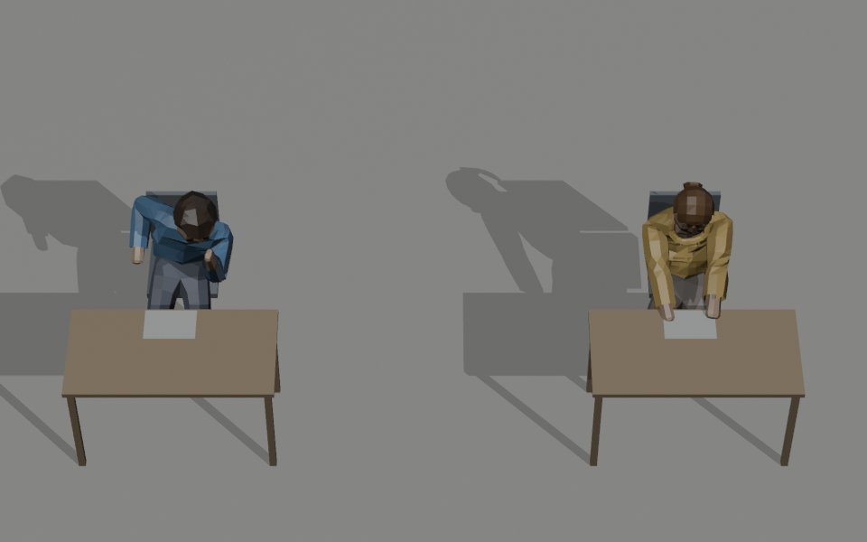
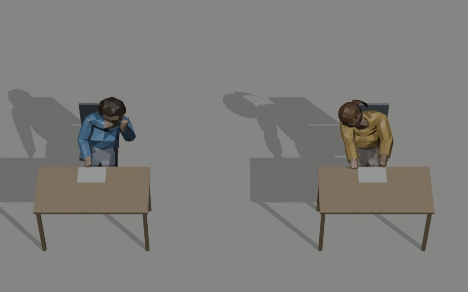
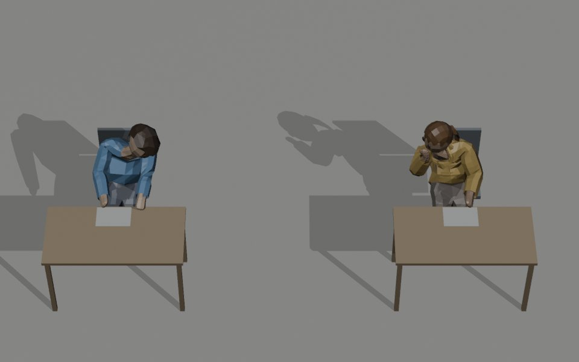
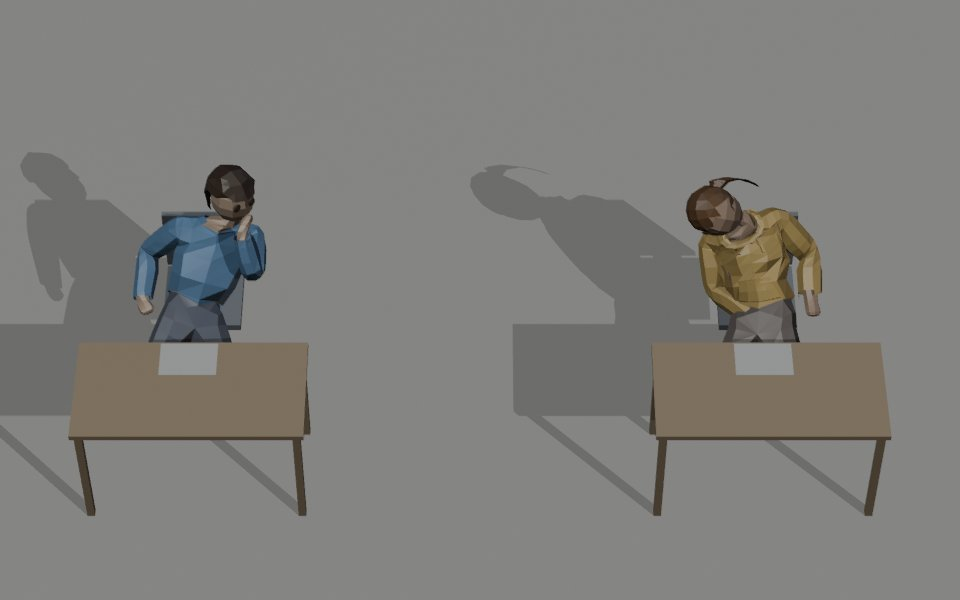
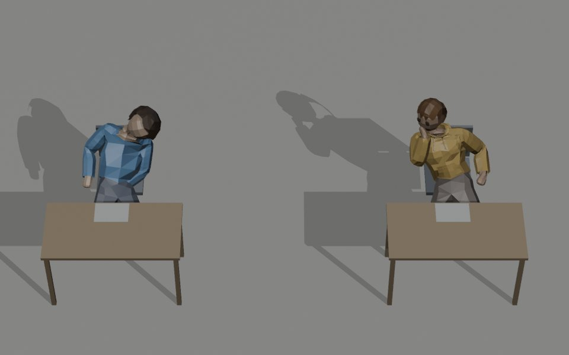
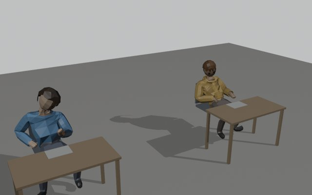
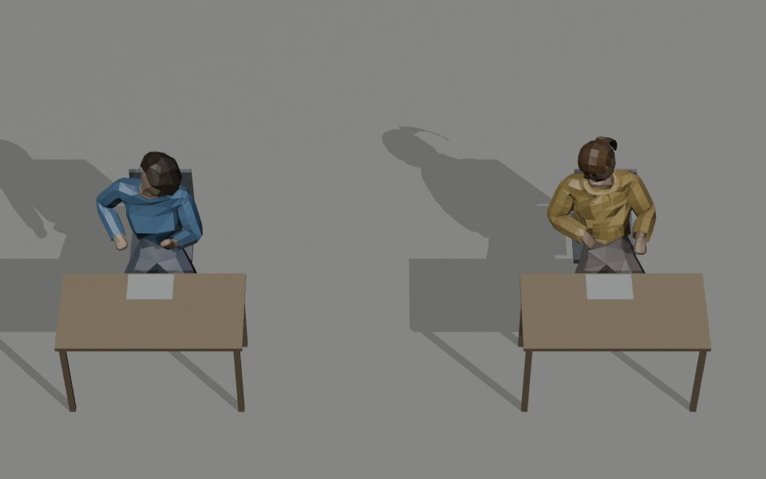
What each does well and badly
Blender, by hand
- The hand is clearly cupped at the mouth, on the side the invigilator sees.
- Hands stay on the desk, like every other exam clip, so blending in and out of writing or reading looks natural.
- Nothing passes through the chair or desk (checked every third frame).
- Every amount is a number in a script: lean, head turn, hand height, nod speed. Easy to push further after a look on the phone.
- Free. A clean 4-second loop.
- Motion is tidier and a little mechanical up close; the body holds still apart from the head and hand.
- The listener's far arm stays long, reaching to the paper.
Meshy, text-to-motion
- Softer, more natural body movement.
- A big sideways lean that reads strongly from above.
- Hands rest in the lap. Fitting them to the desk failed: the generated body leans back, so the wrists stayed 28–35 cm short.
- It reclined through the chair back; it had to be slid 12 cm forward on the seat to clear it.
- The whisperer's hand rests on the cheek, which can read as thinking.
- Prompts are hit and miss: the first try (20 credits) was unusable. Any change means paying again.
- 40 credits for these two clips.
Recommendation: the Blender pair
From the game camera both versions read as two students talking across the gap. The hand-made pair does it with the hand at the mouth and the hands on the desk, fits the furniture with nothing passing through, and can be adjusted for free after it has been seen on the phone. Meshy's bigger lean is its one real advantage, and the Blender lean is a single number if more is wanted. Meshy's clips would need more paid attempts to get the hands onto the desk.
Clip names
"Left" means toward the neighbour on the student's own left, as with today's WhisperLeft (aimed +1). The Right clips are exact mirrors. Not in the game yet.
Blender: four loops of 4 s (120 frames at 30 fps). Meshy: four loops of 3.2 s (96 frames). Both held loops, like today's whisper.